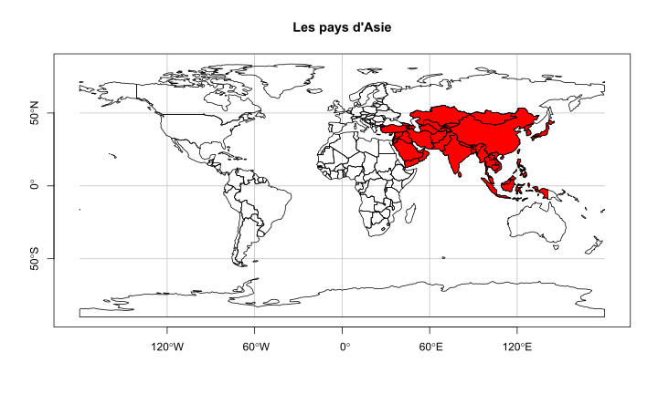

class(world)[1] "sf" "tbl_df" "tbl" "data.frame"dim(world)[1] 177 11names(world) [1] "iso_a2" "name_long" "continent" "region_un" "subregion" "type"
[7] "area_km2" "pop" "lifeExp" "gdpPercap" "geom" Nous allons nous intéresser au jeu de données world présent dans le package spData
class(world)[1] "sf" "tbl_df" "tbl" "data.frame"dim(world)[1] 177 11names(world) [1] "iso_a2" "name_long" "continent" "region_un" "subregion" "type"
[7] "area_km2" "pop" "lifeExp" "gdpPercap" "geom" Il s’agit bien d’un objet de type dataframe composé de 177 pays et 11 colonnes. Mais c’est aussi un objet de classe sf1
Sélectionnons un sous-ensemble de world que nous appellerons world_mini
world_mini <- world[1:2, 1:3]
world_miniSimple feature collection with 2 features and 3 fields
Geometry type: MULTIPOLYGON
Dimension: XY
Bounding box: xmin: -180 ymin: -18.28799 xmax: 180 ymax: -0.95
Geodetic CRS: WGS 84
iso_a2 name_long continent geom
1 FJ Fiji Oceania MULTIPOLYGON (((-180 -16.55...
2 TZ Tanzania Africa MULTIPOLYGON (((33.90371 -0...Comparé à un dataframe standard, un objet de type sf inclut des méta-données géographiques additionnelles :
Geometry typeDimensionBounding boxGeodetic CRS, information lié au sytème de coordonnées de référenceainsi que la présence d’une colonne geom (nommé parfois aussi geometry) comportant des éléments géométriques.
Cette colonne particulière est une colonne de classe sfc2.
A leurs tours les objets de type sfc sont composés d’un ou plusieurs objets de type sfg3.
Les “simple features” (que l’on pourrait traduire par “fonctionnalités de base”) font partie d’une norme ouverte homologuée par l’Open Geospatial Consortium (OGC).
C’est un modèle hiérarchique de données qui regroupe 18 types géométriques. Seulement 7 sont utilisés dans la grande majorité des recherches géographiques ; ces types géométriques de base sont intégralement implémentés par le package sf de R.
Il est possible de retrouver l’ensemble des 18 types géométriques dans le manuel PostGIS.
Le paquet sf fournit les classes des vecteurs géographiques et une interface en ligne de commande permettant l’accès aux fonctionnalités de géo-computation offertes par les librairies de bas-niveau suivantes :
GDAL, pour lire, écrire et manipuler un nombre important de formats de données géographiques,
PROJ, une puissante librairie pour la transformations de systèmes de coordonnées,
GEOS, un moteur de géométrie planaire destinés aux calculs de tampons (buffers) par exemple, aussi bien que des centroïdes pour des données projetées suivant un CRS (Coordinate Reference Systems) donné,
S2, un moteur de géométrie sphérique écrit en C++ et développé par Google, via le package s2.
Le message visible au chargement du package sf décline explicitement les liens avec ces librairies et montre aussi l’activation par défaut des fonctionnalités du paquet s2.
Les fonctionnalités offertes par le package sf sont correctement documentées au travers de 7 vignettes visibles hors connexion comme suit :
vignette(package = "sf") # pour voir quels vignettes sont disponibles
vignette("sf1") # une introduction au package
vignette("sf2") # lire, écrire, et convertir les "simple features"
vignette("sf3") # manipuler les géométries des "simple features"
vignette("sf4") # manipuler le "simple features"
vignette("sf5") # afficher les "simple features"
vignette("sf6") # points divers de la documentation
vignette("sf7") # opérations de géométrie sphériqueParmi les 18 types géométriques que gère le package sf nous allons nous focaliser sur les plus communément utilisés :
POINT et MULTIPOINT,LINESTRING et MULTILINESTRING,POLYGON et MULTIPOLYGON,GEOMETRYCOLLECTIONLes encodages standards utilisés pour enregistrer ces sfg4 sont :
SIG5 (ou GIS en anglais) et les bases de données spatiales utilisent l’encodage WKB pour transférer et stocker les objets géométriques.
world_asia <- world[world$continent == "Asia", ]
asia <- st_union(world_asia)
bbox <- st_bbox(world)
asiaGeometry set for 1 feature
Geometry type: MULTIPOLYGON
Dimension: XY
Bounding box: xmin: 26.04335 ymin: -10.35999 xmax: 145.5431 ymax: 55.38525
Geodetic CRS: WGS 84MULTIPOLYGON (((36.14976 35.82153, 35.90502 35....worldSimple feature collection with 177 features and 10 fields
Geometry type: MULTIPOLYGON
Dimension: XY
Bounding box: xmin: -180 ymin: -89.9 xmax: 180 ymax: 83.64513
Geodetic CRS: WGS 84
iso_a2 name_long continent
1 FJ Fiji Oceania
2 TZ Tanzania Africa
3 EH Western Sahara Africa
4 CA Canada North America
5 US United States North America
6 KZ Kazakhstan Asia
7 UZ Uzbekistan Asia
8 PG Papua New Guinea Oceania
9 ID Indonesia Asia
10 AR Argentina South America
11 CL Chile South America
12 CD Democratic Republic of the Congo Africa
13 SO Somalia Africa
14 KE Kenya Africa
15 SD Sudan Africa
16 TD Chad Africa
17 HT Haiti North America
18 DO Dominican Republic North America
19 RU Russian Federation Europe
20 BS Bahamas North America
21 FK Falkland Islands South America
22 NO Norway Europe
23 GL Greenland North America
24 TF French Southern and Antarctic Lands Seven seas (open ocean)
25 TL Timor-Leste Asia
26 ZA South Africa Africa
27 LS Lesotho Africa
28 MX Mexico North America
29 UY Uruguay South America
30 BR Brazil South America
31 BO Bolivia South America
32 PE Peru South America
33 CO Colombia South America
34 PA Panama North America
35 CR Costa Rica North America
36 NI Nicaragua North America
37 HN Honduras North America
38 SV El Salvador North America
39 GT Guatemala North America
40 BZ Belize North America
41 VE Venezuela South America
42 GY Guyana South America
43 SR Suriname South America
44 FR France Europe
45 EC Ecuador South America
46 PR Puerto Rico North America
47 JM Jamaica North America
48 CU Cuba North America
49 ZW Zimbabwe Africa
50 BW Botswana Africa
51 NA Namibia Africa
52 SN Senegal Africa
53 ML Mali Africa
54 MR Mauritania Africa
55 BJ Benin Africa
56 NE Niger Africa
57 NG Nigeria Africa
58 CM Cameroon Africa
59 TG Togo Africa
60 GH Ghana Africa
61 CI Côte d'Ivoire Africa
62 GN Guinea Africa
63 GW Guinea-Bissau Africa
64 LR Liberia Africa
65 SL Sierra Leone Africa
66 BF Burkina Faso Africa
67 CF Central African Republic Africa
68 CG Republic of the Congo Africa
69 GA Gabon Africa
70 GQ Equatorial Guinea Africa
71 ZM Zambia Africa
72 MW Malawi Africa
73 MZ Mozambique Africa
74 SZ eSwatini Africa
75 AO Angola Africa
76 BI Burundi Africa
77 IL Israel Asia
78 LB Lebanon Asia
79 MG Madagascar Africa
80 PS Palestine Asia
81 GM The Gambia Africa
82 TN Tunisia Africa
83 DZ Algeria Africa
84 JO Jordan Asia
85 AE United Arab Emirates Asia
86 QA Qatar Asia
87 KW Kuwait Asia
88 IQ Iraq Asia
89 OM Oman Asia
90 VU Vanuatu Oceania
91 KH Cambodia Asia
92 TH Thailand Asia
93 LA Lao PDR Asia
94 MM Myanmar Asia
95 VN Vietnam Asia
96 KP Dem. Rep. Korea Asia
97 KR Republic of Korea Asia
98 MN Mongolia Asia
99 IN India Asia
100 BD Bangladesh Asia
101 BT Bhutan Asia
102 NP Nepal Asia
103 PK Pakistan Asia
104 AF Afghanistan Asia
105 TJ Tajikistan Asia
106 KG Kyrgyzstan Asia
107 TM Turkmenistan Asia
108 IR Iran Asia
109 SY Syria Asia
110 AM Armenia Asia
111 SE Sweden Europe
112 BY Belarus Europe
113 UA Ukraine Europe
114 PL Poland Europe
115 AT Austria Europe
116 HU Hungary Europe
117 MD Moldova Europe
118 RO Romania Europe
119 LT Lithuania Europe
120 LV Latvia Europe
121 EE Estonia Europe
122 DE Germany Europe
123 BG Bulgaria Europe
124 GR Greece Europe
125 TR Turkey Asia
126 AL Albania Europe
127 HR Croatia Europe
128 CH Switzerland Europe
129 LU Luxembourg Europe
130 BE Belgium Europe
131 NL Netherlands Europe
132 PT Portugal Europe
133 ES Spain Europe
134 IE Ireland Europe
135 NC New Caledonia Oceania
136 SB Solomon Islands Oceania
137 NZ New Zealand Oceania
138 AU Australia Oceania
139 LK Sri Lanka Asia
140 CN China Asia
141 TW Taiwan Asia
142 IT Italy Europe
143 DK Denmark Europe
144 GB United Kingdom Europe
145 IS Iceland Europe
146 AZ Azerbaijan Asia
147 GE Georgia Asia
148 PH Philippines Asia
149 MY Malaysia Asia
150 BN Brunei Darussalam Asia
151 SI Slovenia Europe
152 FI Finland Europe
153 SK Slovakia Europe
154 CZ Czech Republic Europe
155 ER Eritrea Africa
156 JP Japan Asia
157 PY Paraguay South America
158 YE Yemen Asia
159 SA Saudi Arabia Asia
160 AQ Antarctica Antarctica
161 <NA> Northern Cyprus Asia
162 CY Cyprus Asia
163 MA Morocco Africa
164 EG Egypt Africa
165 LY Libya Africa
166 ET Ethiopia Africa
167 DJ Djibouti Africa
168 <NA> Somaliland Africa
169 UG Uganda Africa
170 RW Rwanda Africa
171 BA Bosnia and Herzegovina Europe
172 MK Macedonia Europe
173 RS Serbia Europe
174 ME Montenegro Europe
175 XK Kosovo Europe
176 TT Trinidad and Tobago North America
177 SS South Sudan Africa
region_un subregion type
1 Oceania Melanesia Sovereign country
2 Africa Eastern Africa Sovereign country
3 Africa Northern Africa Indeterminate
4 Americas Northern America Sovereign country
5 Americas Northern America Country
6 Asia Central Asia Sovereign country
7 Asia Central Asia Sovereign country
8 Oceania Melanesia Sovereign country
9 Asia South-Eastern Asia Sovereign country
10 Americas South America Sovereign country
11 Americas South America Sovereign country
12 Africa Middle Africa Sovereign country
13 Africa Eastern Africa Sovereign country
14 Africa Eastern Africa Sovereign country
15 Africa Northern Africa Sovereign country
16 Africa Middle Africa Sovereign country
17 Americas Caribbean Sovereign country
18 Americas Caribbean Sovereign country
19 Europe Eastern Europe Sovereign country
20 Americas Caribbean Sovereign country
21 Americas South America Dependency
22 Europe Northern Europe Sovereign country
23 Americas Northern America Country
24 Seven seas (open ocean) Seven seas (open ocean) Dependency
25 Asia South-Eastern Asia Sovereign country
26 Africa Southern Africa Sovereign country
27 Africa Southern Africa Sovereign country
28 Americas Central America Sovereign country
29 Americas South America Sovereign country
30 Americas South America Sovereign country
31 Americas South America Sovereign country
32 Americas South America Sovereign country
33 Americas South America Sovereign country
34 Americas Central America Sovereign country
35 Americas Central America Sovereign country
36 Americas Central America Sovereign country
37 Americas Central America Sovereign country
38 Americas Central America Sovereign country
39 Americas Central America Sovereign country
40 Americas Central America Sovereign country
41 Americas South America Sovereign country
42 Americas South America Sovereign country
43 Americas South America Sovereign country
44 Europe Western Europe Country
45 Americas South America Sovereign country
46 Americas Caribbean Dependency
47 Americas Caribbean Sovereign country
48 Americas Caribbean Sovereign country
49 Africa Eastern Africa Sovereign country
50 Africa Southern Africa Sovereign country
51 Africa Southern Africa Sovereign country
52 Africa Western Africa Sovereign country
53 Africa Western Africa Sovereign country
54 Africa Western Africa Sovereign country
55 Africa Western Africa Sovereign country
56 Africa Western Africa Sovereign country
57 Africa Western Africa Sovereign country
58 Africa Middle Africa Sovereign country
59 Africa Western Africa Sovereign country
60 Africa Western Africa Sovereign country
61 Africa Western Africa Sovereign country
62 Africa Western Africa Sovereign country
63 Africa Western Africa Sovereign country
64 Africa Western Africa Sovereign country
65 Africa Western Africa Sovereign country
66 Africa Western Africa Sovereign country
67 Africa Middle Africa Sovereign country
68 Africa Middle Africa Sovereign country
69 Africa Middle Africa Sovereign country
70 Africa Middle Africa Sovereign country
71 Africa Eastern Africa Sovereign country
72 Africa Eastern Africa Sovereign country
73 Africa Eastern Africa Sovereign country
74 Africa Southern Africa Sovereign country
75 Africa Middle Africa Sovereign country
76 Africa Eastern Africa Sovereign country
77 Asia Western Asia Country
78 Asia Western Asia Sovereign country
79 Africa Eastern Africa Sovereign country
80 Asia Western Asia Disputed
81 Africa Western Africa Sovereign country
82 Africa Northern Africa Sovereign country
83 Africa Northern Africa Sovereign country
84 Asia Western Asia Sovereign country
85 Asia Western Asia Sovereign country
86 Asia Western Asia Sovereign country
87 Asia Western Asia Sovereign country
88 Asia Western Asia Sovereign country
89 Asia Western Asia Sovereign country
90 Oceania Melanesia Sovereign country
91 Asia South-Eastern Asia Sovereign country
92 Asia South-Eastern Asia Sovereign country
93 Asia South-Eastern Asia Sovereign country
94 Asia South-Eastern Asia Sovereign country
95 Asia South-Eastern Asia Sovereign country
96 Asia Eastern Asia Sovereign country
97 Asia Eastern Asia Sovereign country
98 Asia Eastern Asia Sovereign country
99 Asia Southern Asia Sovereign country
100 Asia Southern Asia Sovereign country
101 Asia Southern Asia Sovereign country
102 Asia Southern Asia Sovereign country
103 Asia Southern Asia Sovereign country
104 Asia Southern Asia Sovereign country
105 Asia Central Asia Sovereign country
106 Asia Central Asia Sovereign country
107 Asia Central Asia Sovereign country
108 Asia Southern Asia Sovereign country
109 Asia Western Asia Sovereign country
110 Asia Western Asia Sovereign country
111 Europe Northern Europe Sovereign country
112 Europe Eastern Europe Sovereign country
113 Europe Eastern Europe Sovereign country
114 Europe Eastern Europe Sovereign country
115 Europe Western Europe Sovereign country
116 Europe Eastern Europe Sovereign country
117 Europe Eastern Europe Sovereign country
118 Europe Eastern Europe Sovereign country
119 Europe Northern Europe Sovereign country
120 Europe Northern Europe Sovereign country
121 Europe Northern Europe Sovereign country
122 Europe Western Europe Sovereign country
123 Europe Eastern Europe Sovereign country
124 Europe Southern Europe Sovereign country
125 Asia Western Asia Sovereign country
126 Europe Southern Europe Sovereign country
127 Europe Southern Europe Sovereign country
128 Europe Western Europe Sovereign country
129 Europe Western Europe Sovereign country
130 Europe Western Europe Sovereign country
131 Europe Western Europe Country
132 Europe Southern Europe Sovereign country
133 Europe Southern Europe Sovereign country
134 Europe Northern Europe Sovereign country
135 Oceania Melanesia Dependency
136 Oceania Melanesia Sovereign country
137 Oceania Australia and New Zealand Country
138 Oceania Australia and New Zealand Country
139 Asia Southern Asia Sovereign country
140 Asia Eastern Asia Country
141 Asia Eastern Asia Sovereign country
142 Europe Southern Europe Sovereign country
143 Europe Northern Europe Country
144 Europe Northern Europe Country
145 Europe Northern Europe Sovereign country
146 Asia Western Asia Sovereign country
147 Asia Western Asia Sovereign country
148 Asia South-Eastern Asia Sovereign country
149 Asia South-Eastern Asia Sovereign country
150 Asia South-Eastern Asia Sovereign country
151 Europe Southern Europe Sovereign country
152 Europe Northern Europe Country
153 Europe Eastern Europe Sovereign country
154 Europe Eastern Europe Sovereign country
155 Africa Eastern Africa Sovereign country
156 Asia Eastern Asia Sovereign country
157 Americas South America Sovereign country
158 Asia Western Asia Sovereign country
159 Asia Western Asia Sovereign country
160 Antarctica Antarctica Indeterminate
161 Asia Western Asia Sovereign country
162 Asia Western Asia Sovereign country
163 Africa Northern Africa Sovereign country
164 Africa Northern Africa Sovereign country
165 Africa Northern Africa Sovereign country
166 Africa Eastern Africa Sovereign country
167 Africa Eastern Africa Sovereign country
168 Africa Eastern Africa Indeterminate
169 Africa Eastern Africa Sovereign country
170 Africa Eastern Africa Sovereign country
171 Europe Southern Europe Sovereign country
172 Europe Southern Europe Sovereign country
173 Europe Southern Europe Sovereign country
174 Europe Southern Europe Sovereign country
175 Europe Southern Europe Sovereign country
176 Americas Caribbean Sovereign country
177 Africa Eastern Africa Sovereign country
area_km2 pop lifeExp gdpPercap geom
1 19289.971 885806 69.96000 8222.2538 MULTIPOLYGON (((-180 -16.55...
2 932745.792 52234869 64.16300 2402.0994 MULTIPOLYGON (((33.90371 -0...
3 96270.601 NA NA NA MULTIPOLYGON (((-8.66559 27...
4 10036042.977 35535348 81.95305 43079.1425 MULTIPOLYGON (((-132.71 54....
5 9510743.745 318622525 78.84146 51921.9846 MULTIPOLYGON (((-171.7317 6...
6 2729810.513 17288285 71.62000 23587.3375 MULTIPOLYGON (((87.35997 49...
7 461410.258 30757700 71.03900 5370.8658 MULTIPOLYGON (((55.96819 41...
8 464520.072 7755785 65.23000 3709.0816 MULTIPOLYGON (((141.0002 -2...
9 1819251.329 255131116 68.85600 10003.0890 MULTIPOLYGON (((104.37 -1.0...
10 2784468.589 42981515 76.25200 18797.5479 MULTIPOLYGON (((-68.63401 -...
11 814844.220 17613798 79.11700 22195.2744 MULTIPOLYGON (((-69.59042 -...
12 2323492.477 73722860 58.78200 785.3473 MULTIPOLYGON (((29.34 -4.49...
13 484332.793 13513125 55.46700 NA MULTIPOLYGON (((41.58513 -1...
14 590836.914 46024250 66.24200 2753.2361 MULTIPOLYGON (((39.20222 -4...
15 1850885.565 37737913 64.00200 4188.3348 MULTIPOLYGON (((23.88711 8....
16 1271694.598 13569438 52.20400 2076.6500 MULTIPOLYGON (((23.83766 19...
17 28540.546 10572466 62.75700 1652.8548 MULTIPOLYGON (((-71.71236 1...
18 48157.874 10405844 73.48300 12663.0422 MULTIPOLYGON (((-71.7083 18...
19 17018507.409 143819666 70.74366 25284.5862 MULTIPOLYGON (((180 70.8322...
20 15584.791 382169 75.37900 28456.8165 MULTIPOLYGON (((-78.98 26.7...
21 16363.799 NA NA NA MULTIPOLYGON (((-61.2 -51.8...
22 397994.629 NA NA NA MULTIPOLYGON (((15.14282 79...
23 2206644.440 56295 NA NA MULTIPOLYGON (((-46.76379 8...
24 11602.572 NA NA NA MULTIPOLYGON (((68.935 -48....
25 14714.931 1212814 68.28500 6262.9055 MULTIPOLYGON (((124.9687 -8...
26 1216400.831 54539571 60.99300 12389.7147 MULTIPOLYGON (((16.34498 -2...
27 27505.655 2145785 53.26800 2677.1981 MULTIPOLYGON (((28.97826 -2...
28 1969480.307 124221600 76.75300 16622.5970 MULTIPOLYGON (((-117.1278 3...
29 176853.636 3419546 77.19000 19827.5650 MULTIPOLYGON (((-57.62513 -...
30 8508557.092 204213133 75.04200 15374.2615 MULTIPOLYGON (((-53.37366 -...
31 1085269.596 10562159 68.35700 6324.8273 MULTIPOLYGON (((-69.52968 -...
32 1309699.636 30973354 74.51800 11547.8342 MULTIPOLYGON (((-69.89364 -...
33 1151882.926 47791911 74.02200 12715.9674 MULTIPOLYGON (((-66.87633 1...
34 75265.449 3903986 77.61000 20017.9944 MULTIPOLYGON (((-77.35336 8...
35 53832.136 4757575 79.44000 14372.4008 MULTIPOLYGON (((-82.5462 9....
36 129540.212 6013997 74.88400 4784.8305 MULTIPOLYGON (((-83.65561 1...
37 113789.775 8809216 73.18100 4231.3251 MULTIPOLYGON (((-83.14722 1...
38 20893.340 6281189 73.01500 6890.7232 MULTIPOLYGON (((-89.35333 1...
39 109459.049 15923559 72.86900 7147.4292 MULTIPOLYGON (((-92.22775 1...
40 22045.451 351694 70.02700 7999.5737 MULTIPOLYGON (((-89.14308 1...
41 908499.070 30738378 74.19600 16745.0220 MULTIPOLYGON (((-60.73357 5...
42 209801.857 763393 66.42500 6906.0123 MULTIPOLYGON (((-56.53939 1...
43 144268.723 547928 71.13800 15306.6924 MULTIPOLYGON (((-54.52475 2...
44 644847.882 NA NA NA MULTIPOLYGON (((-51.6578 4....
45 250747.110 15903112 75.87900 10901.4186 MULTIPOLYGON (((-75.37322 -...
46 9224.663 3534874 79.39012 35066.0464 MULTIPOLYGON (((-66.28243 1...
47 12460.587 2862087 75.68900 8051.2440 MULTIPOLYGON (((-77.5696 18...
48 114866.218 11439767 79.41500 NA MULTIPOLYGON (((-82.26815 2...
49 376328.489 15411675 59.36000 1925.1387 MULTIPOLYGON (((31.19141 -2...
50 591912.017 2168573 64.78000 15914.6702 MULTIPOLYGON (((29.43219 -2...
51 824886.561 2370992 62.98100 9617.3970 MULTIPOLYGON (((19.89577 -2...
52 194390.439 14546111 66.37600 2218.5519 MULTIPOLYGON (((-16.71373 1...
53 1235561.373 16962846 57.00700 1865.1606 MULTIPOLYGON (((-11.51394 1...
54 1054107.194 4063920 62.90700 3655.3885 MULTIPOLYGON (((-17.06342 2...
55 116998.713 10286712 60.37300 2001.0773 MULTIPOLYGON (((2.691702 6....
56 1182269.648 19148219 59.22800 904.4567 MULTIPOLYGON (((14.8513 22....
57 905071.739 176460502 52.54900 5671.9006 MULTIPOLYGON (((2.691702 6....
58 460324.702 22239904 57.11100 3196.3615 MULTIPOLYGON (((14.49579 12...
59 60966.962 7228915 59.60100 1315.3403 MULTIPOLYGON (((0.899563 10...
60 243473.120 26962563 62.15400 3868.6009 MULTIPOLYGON (((0.02380252 ...
61 329825.951 22531350 52.52000 3054.5349 MULTIPOLYGON (((-8.029944 1...
62 239565.079 11805509 58.84600 1734.7367 MULTIPOLYGON (((-13.70048 1...
63 36191.886 1725744 56.59800 1398.2548 MULTIPOLYGON (((-16.67745 1...
64 98206.783 4390737 61.52700 804.7199 MULTIPOLYGON (((-8.439298 7...
65 75980.331 7079162 50.95100 1692.1421 MULTIPOLYGON (((-13.24655 8...
66 271593.672 17585977 59.45700 1582.3337 MULTIPOLYGON (((-5.404342 1...
67 621860.349 4515392 50.62100 597.1352 MULTIPOLYGON (((27.37423 5....
68 339681.855 4871101 63.53600 5538.0529 MULTIPOLYGON (((18.45307 3....
69 269475.798 1875713 65.21100 16678.6381 MULTIPOLYGON (((11.27645 2....
70 27120.575 1129424 57.18000 31542.5108 MULTIPOLYGON (((9.649158 2....
71 751921.215 15620974 60.77500 3632.5038 MULTIPOLYGON (((30.74001 -8...
72 111197.018 17068838 61.93200 1090.3672 MULTIPOLYGON (((32.75938 -9...
73 810994.757 27212382 57.09900 1079.8239 MULTIPOLYGON (((34.55999 -1...
74 18118.634 1295097 56.28700 7870.9707 MULTIPOLYGON (((32.07167 -2...
75 1245463.748 26920466 60.85800 6257.1529 MULTIPOLYGON (((12.32243 -6...
76 26238.948 9891790 56.68800 803.1728 MULTIPOLYGON (((30.46967 -2...
77 22991.166 8215700 82.15366 31702.0835 MULTIPOLYGON (((35.71992 32...
78 10099.003 5603279 79.23100 13831.3752 MULTIPOLYGON (((35.8211 33....
79 589382.827 23589801 65.13300 1372.0210 MULTIPOLYGON (((49.54352 -1...
80 5037.104 4294682 73.12600 4319.5283 MULTIPOLYGON (((35.39756 31...
81 14031.284 1917852 60.70700 1550.2184 MULTIPOLYGON (((-16.71373 1...
82 156237.322 11143908 75.33500 10767.0277 MULTIPOLYGON (((9.48214 30....
83 2315916.658 39113313 75.64100 13483.3379 MULTIPOLYGON (((-8.6844 27....
84 89207.137 8809306 74.03400 8622.1855 MULTIPOLYGON (((35.54567 32...
85 79880.738 9070867 76.94800 63943.1858 MULTIPOLYGON (((51.57952 24...
86 11327.855 2374419 77.88800 120860.0676 MULTIPOLYGON (((50.81011 24...
87 16652.120 3782450 74.45800 70832.3684 MULTIPOLYGON (((47.97452 29...
88 436965.034 35006080 69.45800 14838.3829 MULTIPOLYGON (((39.19547 32...
89 309302.034 3960925 76.57800 40365.2733 MULTIPOLYGON (((55.20834 22...
90 7490.040 258850 71.70900 2892.3416 MULTIPOLYGON (((166.7932 -1...
91 182235.978 15270790 68.25100 3124.3193 MULTIPOLYGON (((102.5849 12...
92 510125.570 68416772 74.89500 14857.2029 MULTIPOLYGON (((105.2188 14...
93 229080.422 6576397 65.97500 5436.4826 MULTIPOLYGON (((107.3827 14...
94 679573.994 51924182 66.28500 4770.0121 MULTIPOLYGON (((100.116 20....
95 335990.802 92544915 75.85500 5264.8281 MULTIPOLYGON (((104.3343 10...
96 125679.216 25116363 71.17900 NA MULTIPOLYGON (((130.64 42.3...
97 99044.367 50746659 81.72195 33425.6896 MULTIPOLYGON (((126.1748 37...
98 1544322.150 2923896 68.84700 11348.6473 MULTIPOLYGON (((87.75126 49...
99 3142892.098 1293859294 68.02100 5385.1418 MULTIPOLYGON (((97.32711 28...
100 133782.141 159405279 71.80300 2973.0416 MULTIPOLYGON (((92.67272 22...
101 39377.402 776448 69.43000 7366.4241 MULTIPOLYGON (((91.69666 27...
102 150706.871 28323241 69.51100 2266.1843 MULTIPOLYGON (((88.12044 27...
103 874119.998 185546257 66.13900 4576.2270 MULTIPOLYGON (((77.83745 35...
104 652270.070 32758020 62.89500 1838.9602 MULTIPOLYGON (((66.51861 37...
105 138111.759 8362745 70.69000 2546.5005 MULTIPOLYGON (((67.83 37.14...
106 195874.658 5835500 70.40244 3181.6422 MULTIPOLYGON (((70.96231 42...
107 480809.522 5466241 67.55200 14332.3658 MULTIPOLYGON (((52.50246 41...
108 1617559.040 78411092 75.46600 16924.2007 MULTIPOLYGON (((48.56797 29...
109 185004.125 19203090 69.81700 NA MULTIPOLYGON (((35.71992 32...
110 28656.601 2906220 74.25500 7971.1179 MULTIPOLYGON (((46.50572 38...
111 450581.582 9696110 82.25366 44167.6319 MULTIPOLYGON (((11.02737 58...
112 208969.830 9474511 72.97073 17944.2098 MULTIPOLYGON (((28.17671 56...
113 572548.984 45271947 71.18659 8243.4735 MULTIPOLYGON (((35.01266 45...
114 310402.333 38011735 77.60244 24347.0737 MULTIPOLYGON (((23.48413 53...
115 85064.895 8546356 81.49024 44320.5020 MULTIPOLYGON (((16.97967 48...
116 92476.460 9866468 75.76341 24161.4255 MULTIPOLYGON (((22.08561 48...
117 32320.392 3556397 71.25800 4762.7809 MULTIPOLYGON (((26.61934 48...
118 238356.297 19908979 74.96098 19677.5203 MULTIPOLYGON (((28.23355 45...
119 63831.091 2932367 74.51707 26258.2101 MULTIPOLYGON (((26.49433 55...
120 63923.533 1993782 74.12439 22172.2535 MULTIPOLYGON (((27.28818 57...
121 44678.197 1314545 77.03415 27113.6859 MULTIPOLYGON (((27.98113 59...
122 357430.341 80982500 81.09024 43560.6192 MULTIPOLYGON (((14.11969 53...
123 110216.875 7223938 74.46585 16302.3206 MULTIPOLYGON (((22.65715 44...
124 131964.647 10892413 81.38537 24081.6305 MULTIPOLYGON (((22.95238 41...
125 798849.164 77030628 75.23900 22401.8804 MULTIPOLYGON (((26.11704 41...
126 29694.800 2889104 77.96300 10701.1208 MULTIPOLYGON (((21.02004 40...
127 57530.852 4238389 77.47805 20334.4465 MULTIPOLYGON (((16.56481 46...
128 46185.251 8188649 83.19756 57218.0279 MULTIPOLYGON (((9.594226 47...
129 2416.870 556319 82.22927 93655.3342 MULTIPOLYGON (((6.043073 50...
130 30126.038 11209057 81.28780 41360.3956 MULTIPOLYGON (((6.156658 50...
131 40024.104 16865008 81.70732 45668.4415 MULTIPOLYGON (((6.90514 53....
132 93408.594 10401062 81.12195 26023.6978 MULTIPOLYGON (((-9.034818 4...
133 502306.468 46480882 83.22927 31195.4052 MULTIPOLYGON (((-7.453726 3...
134 58457.513 4657740 81.34878 48898.3287 MULTIPOLYGON (((-6.197885 5...
135 23219.012 268050 77.25287 NA MULTIPOLYGON (((165.78 -21....
136 24728.114 575504 70.11300 2139.5607 MULTIPOLYGON (((157.14 -7.0...
137 277627.605 4509700 81.40488 34455.3312 MULTIPOLYGON (((169.6678 -4...
138 7687613.843 23504138 82.30000 43547.1975 MULTIPOLYGON (((126.1487 -3...
139 65370.390 20771000 74.90600 10650.3902 MULTIPOLYGON (((81.78796 7....
140 9409830.493 1364270000 75.93200 12758.6478 MULTIPOLYGON (((80.25999 42...
141 34345.701 NA NA NA MULTIPOLYGON (((121.7778 24...
142 315104.851 60789140 83.09024 33945.8439 MULTIPOLYGON (((8.709991 40...
143 42759.928 5643475 80.70000 45057.0742 MULTIPOLYGON (((9.921906 54...
144 249986.395 64613160 81.30488 38251.7925 MULTIPOLYGON (((-6.197885 5...
145 107735.721 327386 82.86098 41701.1373 MULTIPOLYGON (((-14.5087 66...
146 91113.254 9535079 71.80000 16715.1055 MULTIPOLYGON (((46.14362 38...
147 69048.161 3727000 72.95100 8749.1562 MULTIPOLYGON (((39.95501 43...
148 292256.939 100102249 68.81300 6585.8959 MULTIPOLYGON (((118.5046 9....
149 338226.487 30228017 74.97600 24194.6339 MULTIPOLYGON (((100.0858 6....
150 10700.334 411704 76.91700 76089.2866 MULTIPOLYGON (((115.4507 5....
151 19118.123 2061980 81.07805 28417.6564 MULTIPOLYGON (((13.80648 46...
152 341242.339 5461512 81.18049 39017.5372 MULTIPOLYGON (((28.59193 69...
153 47068.082 5418649 76.81220 27285.2847 MULTIPOLYGON (((22.55814 49...
154 81207.603 10525347 78.82439 29119.6166 MULTIPOLYGON (((15.017 51.1...
155 119319.585 NA 64.17400 NA MULTIPOLYGON (((36.42951 14...
156 404619.933 127276000 83.58780 37337.3174 MULTIPOLYGON (((132.3712 33...
157 401335.916 6552584 72.91300 8501.5435 MULTIPOLYGON (((-58.16639 -...
158 455915.007 26246327 64.52300 3766.8053 MULTIPOLYGON (((52.00001 19...
159 1920324.146 30776722 74.23400 49958.4433 MULTIPOLYGON (((34.95604 29...
160 12335956.076 NA NA NA MULTIPOLYGON (((-180 -89.9,...
161 3786.365 NA NA NA MULTIPOLYGON (((32.73178 35...
162 6207.006 1152309 80.17300 29786.3657 MULTIPOLYGON (((32.73178 35...
163 591718.989 34318082 75.30900 7078.8815 MULTIPOLYGON (((-2.169914 3...
164 996311.623 91812566 71.12000 9879.7994 MULTIPOLYGON (((36.86623 22...
165 1633720.717 6204108 71.65900 16371.9022 MULTIPOLYGON (((25 22, 25 2...
166 1132393.167 97366774 64.53500 1424.5270 MULTIPOLYGON (((47.78942 8....
167 21880.251 912164 62.00600 NA MULTIPOLYGON (((42.35156 12...
168 167349.613 NA NA NA MULTIPOLYGON (((48.9482 11....
169 245768.479 38833338 59.22400 1637.2751 MULTIPOLYGON (((33.90371 -0...
170 23365.411 11345357 66.18800 1629.8689 MULTIPOLYGON (((30.4191 -1....
171 50605.075 3566002 76.56100 10516.7864 MULTIPOLYGON (((18.56 42.65...
172 25062.255 2077495 75.38400 12298.4902 MULTIPOLYGON (((22.38053 42...
173 76388.605 7130576 75.33659 13112.9090 MULTIPOLYGON (((18.82982 45...
174 13443.678 621810 76.71200 14796.6354 MULTIPOLYGON (((20.0707 42....
175 11230.262 1821800 71.09756 8698.2916 MULTIPOLYGON (((20.59025 41...
176 7737.810 1354493 70.42600 31181.8212 MULTIPOLYGON (((-61.68 10.7...
177 624909.099 11530971 55.81700 1935.8794 MULTIPOLYGON (((30.83385 3....plot(
asia,
xlim = c(bbox["xmin"], bbox["xmax"]),
ylim = c(bbox["ymin"],bbox["ymax"]),
col = "red",
graticule = TRUE,
axes = TRUE,
main = "Les pays d'Asie"
)
plot(
st_geometry(world),
add = TRUE
)
Les mots sont ici malaisés à formuler pour des éléments graphiques simples (bounding box) c’est ce qui fait ici la difficulté de la transmission correcte des informations pour une personne novice dans le domaine.